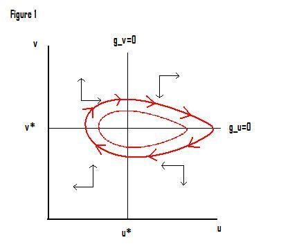
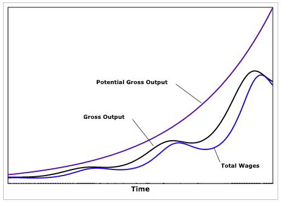

총생산함수 $$q = min(al, \frac{k}{\sigma } )$$ $$q$$ = 총생산 $$ℓ$$ = 노동 $$k$$ = 자본 $$a$$ = 노동 생산성 $$ \sigma $$ = 자본/생산물 비율(상수) 이 모든 변수들은 시간의 함수이지만, 편의상 시간 첨자는 생략되었다. Harrod–Domar 모형과 달리, 자본은 완전히 가동되는 것으로 가정한다. 따라서 $$al = \frac{k}{\sigma } = q$$ 언제나. 고용률( $$v$$ ) 은 다음과 같이 주어진다. $$v = \frac{l}{n}$$ 여기서 $$n$$은 성장률 $$β$$로 증가하는 총 노동력이다. 또한, 노동 생산성 $$a$$도 성장률 $$α$$로 증가한다고 가정한다. 이 경우 고용률의 성장률은 다음과 같이 주어진다. $$g_{v} = \frac{\frac{dv}{dt}}{v} = g_{l} - \beta$$ 결과적으로 절대 고용 수준의 성장률은 다음과 같이 주어진다. $$g_{l} = \frac{\frac{dl}{dt}}{l} = g_{q} - \alpha$$ 임금은 다음과 같이 선형화된 필립스 곡선 관계에 따라 변하는 것으로 가정한다. $$g_{w} = \frac{\frac{dw}{dt}}{w} = \rho v - \gamma$$ 즉, 노동 시장이 '타이트'하면(고용이 이미 높음) 임금에 상승 압력이 가해지고, '느슨한' 노동 시장에서는 그 반대가 된다. 이는
모델의 이름 중
"계급 투쟁" 부분과 느슨하게 연관될 수 있는 측면이지만, 이러한 종류의 필립스 곡선은 많은 거시 경제 모델에서 찾아볼 수 있다. 산출물에서 노동자의 몫은 u이며, 정의상 다음과 같다. $$u = \frac{wl}{q} = \frac{w}{a}$$ 따라서 노동자 몫의 성장률은 다음과 같다. $$g_{u} = \frac{\frac{du}{dt}}{u} = g_{w} - \alpha$$ 산출물에서의 노동 점유율은 임금에 따라 증가하지만, 동일한 양의 산출물을 생산하는 데 더 적은 노동자가 필요하기 때문에 생산성 증가에
따라
감소한다. 마지막으로 자본 축적 방정식과 그에 따른 산출 성장률이 있다 (자본의 완전 가동과 규모에 대한 수익 불변 가정에 의해 k와 q는
동일한 속도로
성장한다). 노동자는 임금을 소비하고 자본가는 이윤의 일부 s를 저축한다고 가정하며 (이 모델은 자본가가 노동자보다 더 많이 저축하는 경우로 일반화됨), 자본은 다음과 같은
감가상각률로
감가상각된다고 가정한다 $$\delta$$ 따라서 산출과 자본의 성장률은 다음과 같이 주어진다.
$$g_{k} = \frac{\frac{dk}{dt}}{k} = g_{q} = s(1-u) \frac{q}{k} - \delta$$
$$g_{v} = \frac{\frac{dv}{dt}}{v} = \frac{s(1-u)}{\sigma } - ( \delta + \alpha +
\beta )$$ 두 미분 방정식 $$g_{v} = \frac{\frac{dv}{dt}}{v} = \frac{s(1-u)}{\sigma } - ( \delta + \alpha +
\beta )$$
$$g_{u} = \frac{\frac{du}{dt}}{u} = g_{w} - \alpha = \rho v - \gamma - \alpha$$
이들은 모델의 핵심 방정식이며 사실상 Lotka–Volterra 방정식이다. 모델을 명시적으로 풀 수도 있지만, 상변화도(phase diagram)를 통해 경제의 궤적을 분석하는 것이 유익하다.
위의 두
방정식을 0으로
설정하면 고용률 v와 노동자 몫 u의 성장이 각각 0이 되는 u와 v의 값을 얻는다. $$\frac{s(1-u)}{\sigma } - ( \delta + \alpha + \beta ) = 0$$ 따라서 $$u^{\cdot} = 1- \frac{( \delta + \alpha + \beta ) \sigma }{s}$$
$$\rho v - \gamma - \alpha = 0$$ 따라서 $$v^{\cdot} = \frac{\gamma + \alpha }{\rho }$$
이 두 선은 (u와 v가 1보다 높아지지 않도록 하는 매개변수 제한과 함께) 양의 사분면을 네 영역으로 나눈다. 아래 그림은 각 영역에서의 경제 움직임을 화살표로 나타낸다. 예를 들어 북서쪽 영역(높은 고용, 낮은 노동 점유율)에서 경제는 북동쪽으로 이동한다(고용이 상승하고 노동자의 몫이 증가한다).
일단 u* 선을 넘으면 남서쪽으로 이동하기 시작한다.
가정
해의 도출
아래 그림은 시간 경과에 따른 잠재 산출(완전 고용 시 산출), 실제 산출 및 임금의 움직임을 보여준다.

보시다시피 Goodwin 모형은 수요 측면이든 공급 측면이든 외부 충격에 대한 외부 가정 없이도 경제 활동에서 내생적인 변동을 생성할 수 있다.